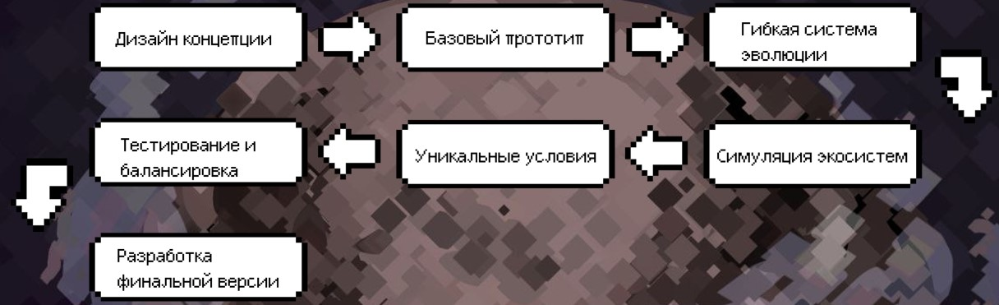
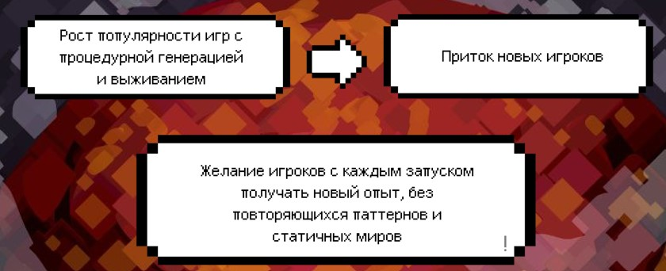
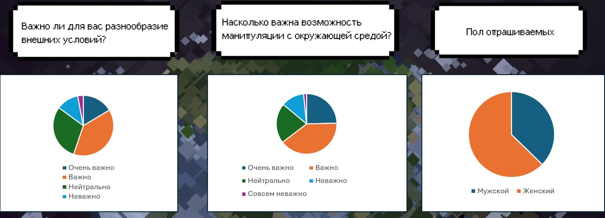
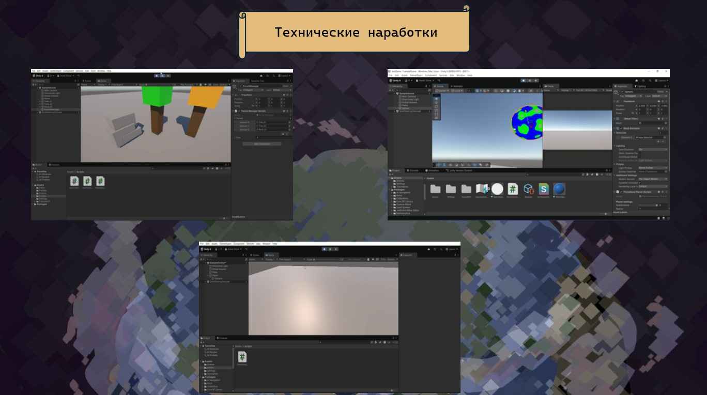
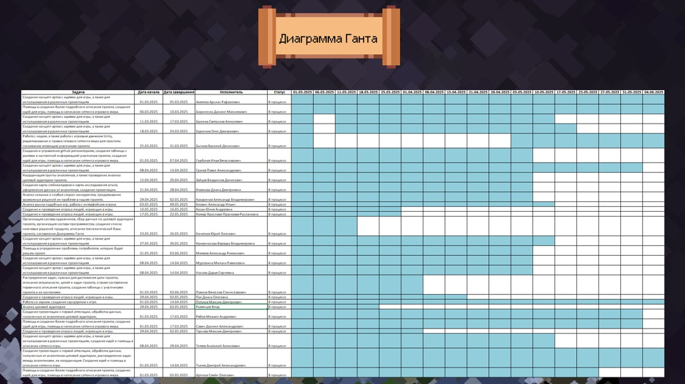

Записи журнала

03.02 - Начало проекта
Сегодня мы официально стартовали наш проект ECOLLAPSE. Собрались в команде и обсудили основные идеи и концепции игры. Распределили роли и задачи между участниками.
Второй этап - Исследование и планирование
Мы провели исследование существующих игр, чтобы определить, какие механики лучше использовать. Создали первичные материалы для технического задания.

Третий этап - Оценка целевой аудитории

Четвертый этап - Технические наработки
Следующим шагом стало создание шаблонов для различных элементов игры. Мы поняли, что для успешного продвижения вперед нам нужно иметь четкие и удобные шаблоны.
- Шаблон персонажа: Мы разработали базовую структуру для игрока, включая параметры здоровья, энергии, инвентаря и навыков. Это решение позволило нам быстро создавать новых персонажей без необходимости начинать с нуля для каждого.
- Шаблон окружения: Вместе с командами 3D-дизайнеров и художников мы создали шаблоны для различных видов местности, таких как леса, горы и пещеры. Эти шаблоны включали базовые элементы, такие как деревья, камни и вода, что позволило легко и быстро наполнять уровень.
- Шаблон интерфейса: Мы разработали графические шаблоны для интерфейса пользователя (UI), где были прописаны основные элементы, такие как индикаторы здоровья, меню активности и инвентаря. Эти шаблоны обеспечили единообразие и согласованность в дизайне интерфейса.

